| Created:
03/22/01. Revised: 08/07/01. Copyright © 2001 by Victor Manta, Switzerland. All rights reserved worldwide. |
|
In history
Switzerland will have the last word.
Victor Hugo.
Two joint issues were brought one after another, within two months. One was made with the Thailand, commemorating the very important event of 100 years since the visit of the King of Siam in Switzerland. The name of this king was Chulalongkorn (or Rama V). His Royal Majesty is shown together with the President of the Swiss Confederation, Mr. Adolf Deucher. The issuing date was September 12, 1977.
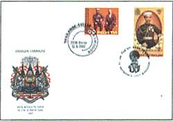 |
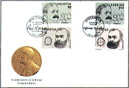 |
A joint issue with Sweden has seen the light on December 13, 1997. It shows Alfred Nobel (1833-1896), the discoverer of the dynamite and the founder of Nobel Prize, and the Swiss scientist Paul Karrer (1889-1971), the winner of Nobel Prize for chemistry in 1937.
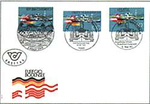 |
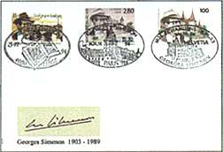 |
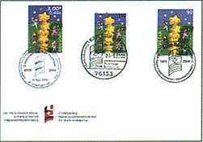 |
And now the most advanced of all, the joint issues of Switzerland with other two countries. Because it concerns three countries, exactly three issues are known so far. The first appeared on May 5, 1994, and is dedicated to the navigation on the lake Constance, a common lake between Switzerland, Germany and Austria. Together with France and Belgium, Switzerland has commemorated the writer Georges Simenon (1903-1989), on a stamp issued on October 15, 1994. And last, but not least, the year 2000 has seen a cover with three stamps (of Switzerland, France and Germany) showing the same design and related to the European Union, a community that the Swiss people recently refused to join.
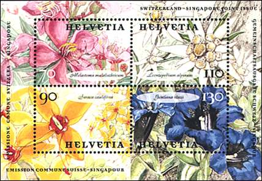 |
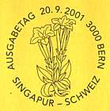 |
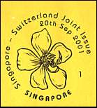 |
The so far newest joint issue of Switzerland is that with Singapore. As the Swiss Collector's magazine wrote: Verdant Singapore is also known as the "Garden City of the East", so what could have been more appropriate than to use two typical examples of native flora as the unifying element of the joint issue.
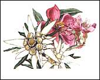 |
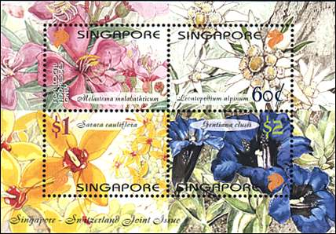 |
Switzerland is represented by the edelweiss (Leontopodium alpinum) and the gentian (Gentiana Clusii), while saraca (Saraca cauliflora) and the Singapore rhododendron (Melastoma malabathicum) do the honors for Singapore". The issuing day is September 20, 2001.
Switzerland concentrates its efforts on friendly and efficient bilateral relationships with all members of the EU and also of the whole world, a politics based on its own freedom and the related economic prosperity. The promotion of this kind of relationships is actually the profound message of all Swiss joint issues presented on this page. It is possibly also the most important word Switzerland have to say in history, as thought by the great French writer Victor Hugo (see the motto at the top).
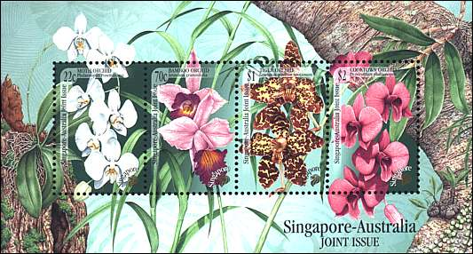
Comment. Switzerland brought in the last time some special issues, like the Embroidery or the Chocolate sheets, that were greeted with enthusiasm as well by Swiss as by abroad collectors.
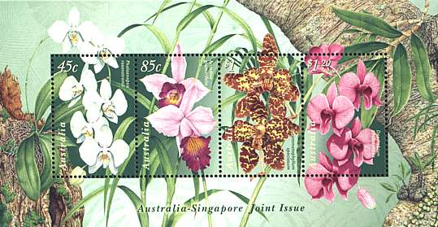
Why then should it produce some sheets that are so similar in design to the nice Singapore-Australia joint issue, shown above?
Links:
Switzerland - first joint issues
Switzerland - SNA joint issue
China-Switzerland joint issue
Chillon Castle
Hans Erni, A Swiss Stamp designer
| Created:
03/22/01. Revised: 08/07/01. Copyright © 2001 by Victor Manta, Switzerland. All rights reserved worldwide. |
|